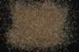

|
|
(For further information on spectroscopy, see:
http://speclab.cr.usgs.gov)
TITLE: Staurolite HS188 DESCRIPT
DOCUMENTATION_FORMAT: MINERAL
SAMPLE_ID: HS188
MINERAL_TYPE: Nesosilicate
MINERAL: Staurolite
FORMULA: Fe(+2)2Al9O6(SiO4)4(O,OH)2
FORMULA_HTML: Fe2+2Al9O6(SiO4)4(O,OH)2
COLLECTION_LOCALITY: Fannin County, Georgia
ORIGINAL_DONOR: Hunt and Salisbury Collection
CURRENT_SAMPLE_LOCATION: USGS Denver Spectroscopy Laboratory
ULTIMATE_SAMPLE_LOCATION: USGS Denver Spectroscopy Laboratory
SAMPLE_DESCRIPTION:
N-14 Staurolite 188B--Fannin Co., Georgia. (Fe2+, Mg)2(Al, Fe3+)9O6 (SiO4)4(O, OH)2: Staurolite, like kyanite and sillimanite is a typical mineral found in medium grade metamorphosed argillaceous rocks. It is produced at a lower temperature-pressure than is kyanite. This spectrum shows strong general absorption to both long and short wavelengths which produces an apparent reflectivity maximum near 1.05 µ. The fall off to longer wavelengths must be due to generalized hydroxyl and water absorptions and is quite similar in appearance to the spectrum of diaspore (see Part III, p. 200, spectrum (-6). The fall off in the visible must be due to absorptions by ferrous and ferric iron.
Sieve interval 74 - 250µm.
Hunt, G.R., J.W. Salisbury, and C.J. Lenhoff, 1973, Visible and near-infrared spectra of minerals and rocks: VI. Additional silicates. Modern Geology, v. 4, p. 85-106.
IMAGE_OF_SAMPLE:

END_SAMPLE_DESCRIPTION.
XRD_ANALYSIS:
40 kV - 30 mA, 7.3-9.5 keV
File: staur188.out, -.mdi
References: JCPDS # 41-1484; Huebner's reference patterns
Found: quartz, staurolite, K-mica
Comment: All components appear well crystallized and in significant representation with quartz, staurolite, mica. All reflections are accounted for. The mica basal reflection at 10 Angstroms appears to be a doublet but next 4.95 does not. >
J.S.Huebner, J. Pickrell, T. Schaefer, written communication(1994 USGS)
END_XRD_ANALYSIS.
COMPOSITIONAL_ANALYSIS_TYPE: None # XRF, EM(WDS), ICP(Trace), WChem
COMPOSITION_TRACE:
COMPOSITION_DISCUSSION:
END_COMPOSITION_DISCUSSION.
MICROSCOPIC_EXAMINATION:
END_MICROSCOPIC_EXAMINATION.
SPECTROSCOPIC_DISCUSSION:
END_SPECTROSCOPIC_DISCUSSION.
SPECTRAL_PURITY: 1b2c3d4_ # 1= 0.2-3, 2= 1.5-6, 3= 6-25, 4= 20-150 microns
| LIB_SPECTRA_HED: | where | Wave Range | Av_Rs_Pwr | Comment |
|---|---|---|---|---|
| LIB_SPECTRA: | splib04a r 4615 | 0.2-3.0µm | 200 | g.s.= |
| LIB_SPECTRA: | splib05a r 6402 | 0.2-3.0µm | 200 | g.s.= |
| LIB_SPECTRA: | splib06a r 21169 | g.s.= | ||
| LIB_SPECTRA: | splib06a r 21181 | g.s.= |
{kind=link}